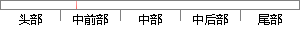

在技术层面，国外的互联网技术发展一直处于世界前沿，据调查在线问卷调查系统在日本和美国的实现技术已经处于世界顶尖水平。
片段位置图

相似结果|
1
原句片段：在技术层面，国外的互联网技术发展一直处于世界前沿，据调查在线问卷调查系统在日本和美国的实现技术已经处于世界顶尖水平。
相似片段 1：在线问卷系统是一个对网上问卷调查中设计问卷、问卷...随着互联网的不断发展,网上问 卷调查成为一种比较...日本和美 国网络问卷调查实现技术已经处于世界顶尖水平...
|
※ 片段修改建议 ※
近似词参考：- 技术：手艺 技能
- 国外：外洋
- 一直：一向 不停
- 世界：天下
- 系统：体系
- 技术：手艺 技能
- 已经：已
- 世界：天下
- 水平：程度
系统自动生成语句：在手艺层面，外洋的互联网手艺发展一向处于天下前沿，据调查在线问卷调查体系在日本和美国的实现手艺已处于天下顶尖程度。
注：本片段修改建议为系统自动生成，仅供参考。